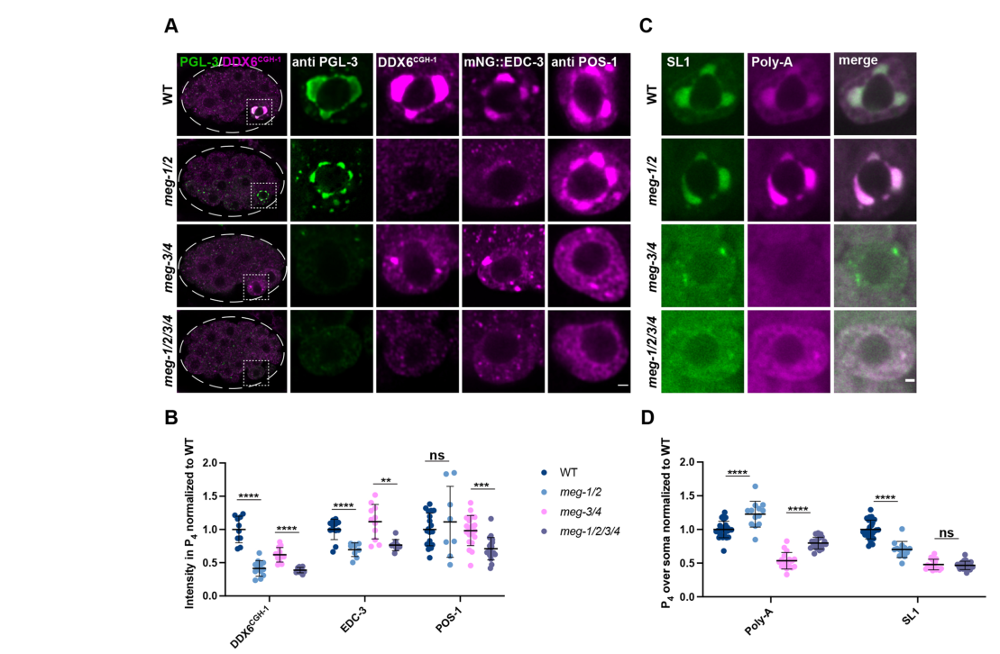

MEG-2 (Maternal Effect Germ cell defective 2) is a highly intrinsically disordered protein (87% disordered residues) that localizes to P granules during C. elegans embryogenesis. It functions redundantly with MEG-1 to regulate P granule dynamics through phase separation mechanisms. MEG-2 has an acidic predicted pI of 6.04 and a serine-rich N-terminus characteristic of MEG proteins. Phosphorylation of MEG-1/2 by kinase MBK-2 promotes P granule disassembly in the anterior cytoplasm, while dephosphorylation by PP2A promotes P granule assembly in the posterior. This asymmetric regulation ensures proper segregation of P granules to the germline during early embryonic divisions. Loss of meg-2 in combination with meg-1 causes sterility and P granule mis-segregation to somatic blastomeres. A refined model (Cassani & Seydoux 2022, PMID:36196602) reassigns MEG-1/2 to a distinct germ-plasm condensate, the germline P-body, which is separable from canonical (PGL/MEG-3/4) P granules and enriches mRNA decapping/deadenylation regulators (CGH-1/DDX6, EDC-3) and the RNA-binding protein POS-1. In the germline founder cell P4, MEG-1/2 maintain these P-body factors and robust mRNA deadenylation; meg-1 meg-2 embryos mis-specify P4, ectopically express somatic programs, and fail to develop a germline, indicating MEG-2 function extends beyond P granule physical dynamics to maternal mRNA regulation and germ cell fate specification. MEG-2 itself has no known catalytic, sequence-specific binding, or transporter activity and acts as a non-enzymatic condensate scaffold/organizer.
| GO Term | Evidence | Action | Reason |
|---|---|---|---|
|
GO:0005515
protein binding
|
IPI
PMID:14704431 A map of the interactome network of the metazoan C. elegans. |
REMOVE |
Summary: High-throughput yeast two-hybrid screen identified interaction between MEG-2 and EYA-1 (O17670). The publication describes a large-scale interactome mapping effort detecting over 4000 interactions. While the interaction may be real, the generic 'protein binding' term provides no functional insight. No specific functional context for this interaction is established in the literature.
Reason: The 'protein binding' term is uninformative as a GO annotation per curation guidelines. High-throughput Y2H interactions without validation or functional characterization should not be annotated with this generic term. The MEG-2/EYA-1 interaction has no established biological significance in germline development or P granule function. Falcon deep research independently found no functional role for MEG-2 as a sequence-specific binding protein, concluding that MEG-2 is a non-enzymatic intrinsically disordered scaffold with no assigned catalytic reaction, substrate, or transporter activity.
Supporting Evidence:
PMID:14704431
more than 4000 interactions were identified from high-throughput, yeast two-hybrid (HT=Y2H) screens
file:worm/meg-2/meg-2-deep-research-falcon.md
MEG-2 is not assigned a catalytic reaction, substrate specificity, or transporter substrate
|
|
GO:0005515
protein binding
|
IPI
PMID:19123269 Empirically controlled mapping of the Caenorhabditis elegans... |
REMOVE |
Summary: This is from a second high-throughput yeast two-hybrid mapping effort (Worm Interactome 2007). The publication describes quality-controlled protein-protein interaction mapping detecting the same MEG-2/EYA-1 interaction. While the interaction was detected in two independent screens, no functional context is established.
Reason: Same rationale as the previous annotation - 'protein binding' is uninformative and does not capture any specific molecular function. The duplicate annotation from a related interactome study adds no additional functional information. If a more specific binding function were established (e.g., specific role in P granule assembly), a more informative MF term should be used.
Supporting Evidence:
PMID:19123269
We present an expanded C. elegans protein-protein interaction network, or 'interactome' map, derived from testing a matrix of approximately 10,000 x approximately 10,000 proteins
|
|
GO:1903864
P granule disassembly
|
IGI
PMID:25535836 Regulation of RNA granule dynamics by phosphorylation of ser... |
ACCEPT |
Summary: Well-supported annotation based on genetic interaction evidence. Wang et al. (2014) demonstrated that MEG-1 and MEG-2 are required for P granule dynamics in embryos. The publication shows that phosphorylation of MEG proteins by MBK-2/DYRK kinase promotes granule disassembly in the anterior cytoplasm (PMID:25535836).
Reason: This annotation accurately captures a core molecular function of MEG-2. The IGI evidence from PMID:25535836 demonstrates that simultaneous loss of meg-1 and meg-2 causes defects in P granule disassembly, with P granules failing to disassemble properly in the anterior cytoplasm of the P1 blastomere. Falcon deep research supports the disassembly role via MEG-2's acidic predicted pI (6.04), which biases the MEG-1/2 pair toward granule dissolution in contrast to the basic MEG-3/4 pair that favors assembly.
Supporting Evidence:
PMID:25535836
Phosphorylation of the MEGs promotes granule disassembly and dephosphorylation promotes granule assembly
file:worm/meg-2/meg-2-deep-research-falcon.md
predicted unphosphorylated pI **MEG-2 = 6.04** (acidic), compared with MEG-3/4 basic pIs. This supports a hypothesis that MEG-1/2 (including MEG-2) bias toward disassembly roles, while MEG-3/4 provide stronger assembly contributions.
|
|
GO:0043186
P granule
|
IDA
PMID:18202375 MEG-1 and MEG-2 are embryo-specific P-granule components req... |
ACCEPT |
Summary: Cellular component annotation demonstrating MEG-2 localization to P granules during embryogenesis. Leacock and Reinke (2008) showed that MEG-1 and MEG-2 are embryo-specific P granule components that localize to P granules from the 4-8 cell stage through subsequent P cell divisions (PMID:18202375).
Reason: This is a core cellular localization for MEG-2. The IDA evidence from direct observation of MEG-2 localization to P granules in embryos is well-established. MEG-2 is one of the defining embryo-specific components of P granules. Falcon deep research confirms GFP::MEG-2 localizes to embryonic P granules in the P lineage (P2/P3/P4) and primordial germ cells Z2/Z3. Note that a more refined view (Cassani & Seydoux 2022, PMID:36196602) reassigns MEG-2 to a distinct germline-P-body condensate that is physically separable from canonical (PGL/MEG-3/4) P granules; however, no specific 'germline P-body' GO term yet exists, so the broader P granule (GO:0043186) component term remains the best available representation of MEG-2 localization.
Supporting Evidence:
PMID:18202375
encode proteins that localize exclusively to P granules during embryonic germline segregation
file:worm/meg-2/meg-2-deep-research-falcon.md
GFP::MEG-2 localizes to **P granules** in the embryonic P lineage (P2/P3/P4) and the primordial germ cells **Z2/Z3** (embryonic stages).
PMID:36196602
In this study, we describe a second condensate type, germline P-bodies, that contains regulators of mRNA adenylation and decapping, the RNA-binding protein POS-1, and MEG-1 and MEG-2, two intrinsically-disordered proteins related to MEG-3 and MEG-4.
|
|
GO:1903863
P granule assembly
|
IGI
PMID:25535836 Regulation of RNA granule dynamics by phosphorylation of ser... |
NEW |
Summary: Proposed new annotation based on evidence from Wang et al. (2014) showing that dephosphorylated MEG-1/MEG-2 promotes P granule assembly in the posterior cytoplasm. The literature establishes a dual role for MEG proteins in both assembly and disassembly depending on phosphorylation state.
Reason: The existing annotations only capture the disassembly function, but MEG-2 also has a documented role in promoting P granule assembly when dephosphorylated. UniProt annotation states: "Together with dephosphorylated meg-1, promotes the assembly and accumulation of zygotic P granules in the posterior cytoplasm of pre-gastrulation embryos."
Supporting Evidence:
PMID:25535836
Phosphorylation of the MEGs promotes granule disassembly and dephosphorylation promotes granule assembly
|
|
GO:0140693
molecular condensate scaffold activity
|
IGI
PMID:25535836 Regulation of RNA granule dynamics by phosphorylation of ser... |
NEW |
Summary: MEG-2 functions as a scaffold protein for P granule condensates through its intrinsically disordered regions. The MEG proteins regulate liquid-like P granule dynamics through phase separation mechanisms.
Reason: MEG-2 is an intrinsically disordered protein that regulates P granule condensate dynamics. P granules behave as liquid droplets whose dynamics depend on MEG proteins. This molecular function term captures the scaffold role of MEG-2 in condensate formation. Falcon deep research independently synthesizes the literature to describe MEG-2 as a non-enzymatic, low-complexity/IDP-like condensate organizer/scaffold, consistent with this molecular function term. Evidence type is IGI (not IDA): no direct biochemical/biophysical assay of MEG-2 scaffold activity was performed; the scaffold role is inferred from the genetic interaction of meg-1 meg-2 in controlling P granule dynamics (PMID:25535836, which directly demonstrated phosphorylation of MEG-1/MEG-3, not MEG-2) together with MEG-2's IDP/low-complexity properties, matching the IGI evidence used for the other meg-1/meg-2 annotations from this same paper.
Supporting Evidence:
PMID:25535836
RNA granules have been likened to liquid droplets whose dynamics depend on the controlled dissolution and condensation of internal components
file:worm/meg-2/meg-2-deep-research-falcon.md
it is instead described as an **intrinsically disordered/low-complexity protein** that likely serves as a **condensate organizer/scaffold** in post-transcriptional regulation
|
|
GO:0007281
germ cell development
|
IMP
PMID:36196602 Specialized germline P-bodies are required to specify germ c... |
NEW |
Summary: Beyond regulating P granule physical dynamics, MEG-2 (redundantly with MEG-1)
is required for the germline founder cell P4 to adopt and maintain germ cell
fate. Cassani & Seydoux (2022) showed that embryos lacking meg-1 and meg-2
mis-specify the germline founder cell, fail to robustly activate germline
transcriptional programs, and do not develop a germline, leading to fully
penetrant sterility. This developmental endpoint of MEG-2 function is captured
by germ cell development (GO:0007281).
Reason: The existing annotations capture MEG-2's P granule organization and condensate
scaffold roles but not the downstream developmental outcome. The Cassani &
Seydoux (2022) genetic loss-of-function study (PMID:36196602) demonstrates,
via mutant-phenotype (IMP) evidence, that meg-1 meg-2 loss mis-specifies the
germline founder cell P4 and abolishes germline development, supporting germ
cell development as a biological process MEG-2 is directly involved in. Falcon
deep research highlights this 2022 study as the strongest modern functional
source for the MEG-1/2 pair.
Supporting Evidence:
PMID:36196602
Our findings indicate that, unlike P granules, ‘germline P-bodies’ are essential for maternal mRNA regulation and specification of P4 as the germline founder cell.
file:worm/meg-2/meg-2-deep-research-falcon.md
embryos lacking meg-1/2 mis-specify the germline founder cell and fail to develop a germline, resulting in **100% sterility** in the reported meg-1 meg-2 loss paradigms
|
The research report should be a detailed narrative explaining the function, biological processes, and localization of the gene product. Citations should be given for all claims.
You should prioritize authoritative reviews and primary scientific literature when conducting research. You can supplement
this with annotations you find in gene/protein databases, but these can be outdated or inaccurate.
We are specifically interested in the primary function of the gene - for enzymes, what reaction is catalyzed, and what is the substrate specificity? For transporters, what is the substrate? For structural proteins or adapters, what is the broader structural role? For signaling molecules, what is the role in the pathway.
We are interested in where in or outside the cell the gene product carries out its function.
We are also interested in the signaling or biochemical pathways in which the gene functions. We are less interested in broad pleiotropic effects, except where these elucidate the precise role.
Include evidence where possible. We are interested in both experimental evidence as well as inference from structure, evolution, or bioinformatic analysis. Precise studies should be prioritized over high-throughput, where available.
Caenorhabditis elegans meg-2 encodes Protein MEG-2 (Maternal-effect germ cell defective 2), an embryo-restricted germ-plasm factor that acts transiently during early embryogenesis but is essential for later germline development. Primary evidence supports that MEG-2 (i) localizes to embryonic germline condensates (classically described as P granules), (ii) acts redundantly with its paralog MEG-1, and (iii) is now best understood as part of a module that maintains germline P-body–like condensates in the P4 blastomere to control maternal mRNA deadenylation/decapping and proper germline founder-cell fate. No enzymatic activity is currently attributed to MEG-2; it is instead described as an intrinsically disordered/low-complexity protein that likely serves as a condensate organizer/scaffold in post-transcriptional regulation. (leacock2008meg1andmeg2 pages 6-8, kapelle2011c.elegansmeg‐1 pages 1-3, cassani2022specializedgermlinepbodies pages 5-6, cassani2022specializedgermlinepbodies pages 1-2)
“Maternal-effect” indicates the phenotype arises from loss of maternal gene product deposited in the egg; embryos from mutant mothers can fail in germline development even if the zygotic genotype is otherwise viable. MEG proteins are germ-plasm components required redundantly for fertility and germline development. (wang2014regulationofrna pages 15-16)
MEG proteins are serine-rich/low-complexity factors implicated in condensate assembly/disassembly dynamics. In this framework, MEG-2 is viewed as a non-enzymatic regulator whose physical properties (e.g., charge and disorder) contribute to condensate behavior and downstream mRNA regulation. (wang2014regulationofrna pages 15-16, cassani2022specializedgermlinepbodies pages 1-2)
Across the primary sources retrieved here, MEG-2 is not assigned a catalytic reaction, substrate specificity, or transporter substrate. Instead, it is treated as a novel, low-complexity/IDP-like regulatory protein required for proper germline development through organization of RNP condensates and post-transcriptional regulation. (kapelle2011c.elegansmeg‐1 pages 1-3, wang2014regulationofrna pages 15-16, cassani2022specializedgermlinepbodies pages 1-2)
(A) Condensate-associated localization during embryogenesis
- GFP::MEG-2 localizes to P granules in the embryonic P lineage (P2/P3/P4) and the primordial germ cells Z2/Z3 (embryonic stages). (leacock2008meg1andmeg2 pages 6-8)
(B) Redundant requirement with MEG-1 for germline development
- Extra copies of MEG-2 (GFP::MEG-2) can partially rescue sterility of meg-1 mutants at 25°C, supporting functional redundancy and dosage sensitivity across MEG-1/2. (leacock2008meg1andmeg2 pages 6-8)
- Genetic analyses across MEG family members indicate synthetic sterility: for example, meg-1 mutants show ~4% sterility and meg-3 meg-4 ~30% sterility, while meg-1 meg-3 meg-4 are 100% sterile; critically, meg-1 meg-2 embryos can still assemble embryonic P granules yet display fully penetrant Meg sterility, suggesting MEG-dependent germline function is not reducible to visible P-granule assembly alone. (wang2014regulationofrna pages 15-16)
(C) Germline P-body maintenance and maternal mRNA control in P4 (MEG-1/2 module)
- MEG-1/2 are required to maintain high levels of P-body proteins CGH-1 (DDX6) and EDC-3 specifically in the P4 blastomere; MEG-1/2 are not required for PGL-3 localization to P4, and POS-1 levels in P4 are largely unaffected in meg-1 meg-2 double loss (POS-1 reduction becomes apparent in quadruple meg depletion). (cassani2022specializedgermlinepbodies pages 5-6)
- Functional readout: in meg-1 meg-2 embryos, poly-A levels are increased in P4 despite SL1 levels decreasing/not changing, consistent with compromised mRNA deadenylation/turnover activity in P4. (cassani2022specializedgermlinepbodies pages 5-6, cassani2022specializedgermlinepbodies media aca4ef46)
- Transcriptome consequences: RNA-seq identified 550 upregulated and 230 downregulated mRNAs in meg-1 meg-2 embryos versus wild type; 223/550 (40%) of upregulated mRNAs overlap “deadenylated POS-1 targets” (defined by longer poly-A tails upon pos-1 RNAi), with Fisher’s exact test P=0.0002—supporting a functional relationship between MEG-1/2 and POS-1-regulated deadenylation programs. (cassani2022specializedgermlinepbodies pages 5-6)
The most detailed mechanistic and quantitative work emphasizes the P4 blastomere (the germline founder precursor), where MEG-1/2 maintain germline P-bodies enriched for mRNA decapping/deadenylation regulators and coordinate proper turnover and translation activation of maternal mRNAs. (cassani2022specializedgermlinepbodies pages 5-6, cassani2022specializedgermlinepbodies pages 10-11, cassani2022specializedgermlinepbodies media aca4ef46)
In meg-1 meg-2 embryos (meg-1(vr10) meg-2(RNAi) or deletion of the operon reported in the same study), P4 descendants show:
- Ectopic muscle program marker hlh-1 expression in 21/23 embryos (vs 0/21 wild type). (cassani2022specializedgermlinepbodies pages 6-8)
- Failure to robustly activate germline transcriptional program marker xnd-1 in 16/24 embryos. (cassani2022specializedgermlinepbodies pages 6-8)
- Extra P-granule-positive cells in 50% of bean-to-comma embryos and 100% of non-fed L1 larvae, consistent with abnormal germline program deployment/maintenance. (cassani2022specializedgermlinepbodies pages 6-8)
A targeted genetic-interaction analysis (performed in a meg-1 mutant background but explicitly noting MEG-2 redundancy) reported:
- nos-3 loss suppresses meg-1 sterility (restores fertility).
- nos-2 loss enhances meg-1 sterility and abolishes proliferation beyond Z2/Z3, causing early and pronounced germ cell degeneration.
These observations support that MEG-1/2 function interfaces with nanos-dependent germline proliferation and survival pathways. (kapelle2011c.elegansmeg‐1 pages 1-3)
A mechanistic model for MEG proteins suggests phosphorylation/dephosphorylation cycles regulate condensate dynamics. Although direct kinase/phosphatase targeting was shown for MEG-1/MEG-3 in that work, MEG-2 is discussed as likely contributing to disassembly based on predicted charge properties: predicted unphosphorylated pI MEG-2 = 6.04 (acidic), compared with MEG-3/4 basic pIs. This supports a hypothesis that MEG-1/2 (including MEG-2) bias toward disassembly roles, while MEG-3/4 provide stronger assembly contributions. (wang2014regulationofrna pages 15-16)
Although MEG-2 itself is a basic research target, meg-2/MEG-2 biology is deployed as a practical experimental system in several ways:
1. Condensate biology/phase separation in vivo: MEG proteins serve as a genetically tractable paradigm to dissect rules of biomolecular condensate specialization in embryos (P granules vs germline P-bodies) using quantitative imaging and genetics. (wang2014regulationofrna pages 15-16, cassani2022specializedgermlinepbodies pages 5-6)
2. Post-transcriptional regulation assays: Germline P-body biology in P4 is interrogated by combining immunofluorescence of RNP components (e.g., CGH-1, EDC-3, POS-1), in situ hybridization for poly-A and SL1 RNAs, and RNA-seq of early embryos—an integrated toolkit for mRNA turnover and translational activation studies in vivo. (cassani2022specializedgermlinepbodies pages 5-6)
3. Germline fate specification readouts: The system provides cell fate and differentiation readouts (e.g., hlh-1, xnd-1; germline proliferation in larvae) for linking condensate state to developmental outcomes. (cassani2022specializedgermlinepbodies pages 6-8, kapelle2011c.elegansmeg‐1 pages 1-3)
Key quantitative findings from Cassani & Seydoux (2022) include:
- RNA-seq: 550 upregulated, 230 downregulated mRNAs in meg-1 meg-2 vs WT; 223/550 (40%) overlap deadenylated POS-1 targets; P=0.0002. (cassani2022specializedgermlinepbodies pages 5-6)
- Fate mis-specification: hlh-1 ectopic in 21/23 embryos; xnd-1 activation fails in 16/24 embryos. (cassani2022specializedgermlinepbodies pages 6-8)
- Sterility: 100% sterile under meg-1/2 loss paradigms reported in that study. (cassani2022specializedgermlinepbodies pages 6-8)
- Imaging quantification sample sizes in P4: CGH-1 WT n=10 vs meg-1/2 n=12; EDC-3 WT n=12 vs meg-1/2 n=9; POS-1 WT n=19 vs meg-1/2 n=8; poly-A/SL1 WT n=26 vs meg-1/2 n=13. (cassani2022specializedgermlinepbodies pages 5-6)
The following table summarizes the most relevant primary and review sources, with dates and URLs.
| Year | Citation (short) | Publication type | Main meg-2-related findings (localization/function/phenotype/interactions) | Key quantitative data/statistics | URL/DOI | Notes on evidence strength (meg-2 specific vs meg-1/2 combined) |
|---|---|---|---|---|---|---|
| 2008 | Leacock & Reinke, Genetics | Primary research | Verified target identity in C. elegans: MEG-2 corresponds to the embryo-specific maternal-effect germ cell defective protein encoded by meg-2/K02B9.2. GFP::MEG-2 localizes to embryonic P granules in the P lineage (P2/P3/P4) and Z2/Z3; MEG-2 is functionally redundant with MEG-1, and increased MEG-2 dosage can partially compensate for loss of MEG-1. P-granule association is transient and embryo-restricted. | MEG-1/MEG-2 localization starts at ~4–8-cell stage and fades by ~100-cell stage when Z2/Z3 are born; nos-2 staining in late P4/Z2/Z3 was seen in ~52% vs ~55% of meg-1 vs wild type embryos (MEG-1-focused control context); meg-1 sterility is high (>90% at restrictive temperature) and GFP::MEG-2 partially rescues meg-1 sterility at 25°C (leacock2008meg1andmeg2 pages 6-8) | https://doi.org/10.1534/genetics.107.080218 | Strongest direct source for MEG-2 identity/localization; some phenotype data are meg-1-centered, with MEG-2 mainly inferred through redundancy and rescue (leacock2008meg1andmeg2 pages 6-8) |
| 2010 | Updike & Strome, J. Andrology | Review | Reviews P-granule assembly/function in C. elegans and places MEG proteins within the embryonic germ plasm/P-granule pathway. Useful for pathway context and expert interpretation that P granules regulate post-transcriptional gene control in the germ line. | No meg-2-specific quantitative statistics in retrieved context. | https://doi.org/10.2164/jandrol.109.008292 | Contextual review; not meg-2-specific and not primary evidence in the retrieved excerpts. |
| 2011 | Kapelle & Reinke, genesis | Primary research | MEG-1 and MEG-2 are closely related, transient P-granule proteins acting during early embryogenesis but affecting later germ-cell proliferation/survival. Loss of meg-2 enhances sterile phenotypes, supporting redundancy with meg-1. Study highlights genetic interactions in the MEG-1/2 module with nanos-family genes, especially functional opposition/synergy involving nos-2 and nos-3. | Expression window emphasized for MEG proteins: 4-cell to 28-cell stages; no direct meg-2-only penetrance values in retrieved excerpt. Reported directionality: nos-3 loss suppresses meg-1 sterility, nos-2 loss enhances meg-1 sterility and abolishes proliferation beyond Z2/Z3 (kapelle2011c.elegansmeg‐1 pages 1-3) | https://doi.org/10.1002/dvg.20726 | Moderate evidence for MEG-2 because it is discussed mainly as a redundant paralog of MEG-1; strongest for genetic interaction logic, weaker for meg-2-specific mechanistic detail (kapelle2011c.elegansmeg‐1 pages 1-3) |
| 2014 | Wang et al., eLife | Primary research | Positions MEG proteins as intrinsically disordered, serine-rich regulators of embryonic RNA-granule dynamics. Although direct biochemical targeting was shown for MEG-1/3, the paper infers that MEG-2, like MEG-1, likely contributes to granule disassembly because of its acidic character. Crucially, fertility defects in MEG mutants can be uncoupled from visible P-granule assembly defects, implying a broader germ-plasm activity. | Predicted unphosphorylated pI: MEG-1 6.63; MEG-2 6.04; MEG-3 9.74; MEG-4 9.33. Sterility examples: meg-1 ~4% sterile; meg-3 meg-4 ~30% sterile; meg-1 meg-3 meg-4 100% sterile. meg-1 meg-2 embryos still assemble embryonic P granules yet share fully penetrant Meg sterility with meg-1 meg-3 meg-4 (wang2014regulationofrna pages 15-16) | https://doi.org/10.7554/eLife.04591 | Strong for MEG network logic and phase-separation model; indirect for MEG-2 molecular mechanism because phosphorylation was demonstrated for MEG-1/3, not directly for MEG-2 in retrieved text (wang2014regulationofrna pages 15-16) |
| 2019 | Marnik & Updike, Traffic | Review | Reviews membraneless organelles/P granules in C. elegans and the role of intrinsically disordered proteins in phase separation. Useful for expert framing of MEG proteins as scaffold-like regulators of condensate behavior. | No meg-2-specific quantitative statistics in retrieved context. | https://doi.org/10.1111/tra.12644 | Broad condensate review; useful conceptual context only, not direct meg-2 evidence. |
| 2020 | Lee et al., eLife | Primary research | Demonstrates that P granules recruit mRNAs via condensation with intrinsically disordered MEG-3, establishing a mechanistic framework for how MEG-family proteins can organize RNA-rich condensates. Not meg-2-specific, but highly relevant for interpreting MEG-2 as an IDP-associated germ-plasm factor in mRNA handling. | ~500 mRNAs bound/recruited in vivo by MEG-3-based mechanism; localization to P granules enriches maternal RNAs in the germ lineage (from abstract/snippet context). | https://doi.org/10.7554/eLife.52896 | Indirect evidence only for meg-2; included as mechanistic context on MEG-family/P-granule biology rather than as a meg-2 study. |
| 2021 | Oyewale thesis snippet | Thesis / supporting mention | Low-weight supporting mention that meg-1 and meg-2 are expressed in the embryonic P lineage and degraded concomitant with PGC birth, consistent with their transient embryonic role. | No primary quantitative meg-2 data extracted in retrieved snippet. | https://doi.org/10.25673/82467 | Very low evidence weight; secondary/thesis mention only, included solely as supportive context. |
| 2022 | Cassani & Seydoux, Development | Primary research | Major update: MEG-1/2 are redefined as components of germline P-bodies, distinct from canonical P granules. In P4, MEG-1/2 maintain P-body factors (CGH-1/DDX6, EDC-3), promote deadenylation/turnover of maternal mRNAs, support translational activation of germline determinants (nos-2, Y51F10.2, xnd-1), and are required for correct germline founder-cell fate. MEG-1/2 genetically/functionally interact with POS-1, MEG-3/4, and factors such as GLD-2/GLD-3. | In meg-1 meg-2 embryos: RNA-seq found 550 upregulated and 230 downregulated mRNAs; 223/550 (40%) upregulated genes overlap deadenylated POS-1 targets (Fisher’s exact test P=0.0002). hlh-1 ectopic expression in 21/23 embryos vs 0/21 WT; robust xnd-1 activation fails in 16/24 embryos; extra P-granule-positive cells in 50% of bean-to-comma embryos and 100% of non-fed L1s; 100% sterile. Quantification sample sizes included: CGH-1 WT n=10 vs meg-1/2 n=12; EDC-3 WT n=12 vs meg-1/2 n=9; POS-1 WT n=19 vs meg-1/2 n=8; poly-A/SL1 WT n=26 vs meg-1/2 n=13 (cassani2022specializedgermlinepbodies pages 5-6, cassani2022specializedgermlinepbodies pages 10-11, cassani2022specializedgermlinepbodies pages 1-2, cassani2022specializedgermlinepbodies pages 6-8, cassani2022specializedgermlinepbodies pages 2-3, cassani2022specializedgermlinepbodies media aca4ef46) | https://doi.org/10.1242/dev.200920 | Strongest modern functional source, but almost all key results are for MEG-1/2 combined loss rather than MEG-2 alone. Still highly relevant because MEG-2 is part of the obligate functional pair in embryo germline P-bodies (cassani2022specializedgermlinepbodies pages 5-6, cassani2022specializedgermlinepbodies pages 10-11, cassani2022specializedgermlinepbodies pages 1-2, cassani2022specializedgermlinepbodies pages 6-8, cassani2022specializedgermlinepbodies pages 2-3, cassani2022specializedgermlinepbodies media aca4ef46) |
| 2022 | Phillips & Updike, Genetics | Review | Authoritative review summarizing germ granules and sub-granules in C. elegans germline gene regulation. Supports the current view that distinct condensates partition functions such as mRNA regulation, small-RNA pathways, and inheritance. Useful for expert interpretation of MEG-1/2 findings within broader germ-granule biology. | No meg-2-specific quantitative statistics in retrieved context. | https://doi.org/10.1093/genetics/iyab195 | High-value expert review for synthesis, but not direct evidence for meg-2 alone. |
Table: This table summarizes the main primary and review sources relevant to C. elegans meg-2 (UniProt Q21127/K02B9.2), emphasizing where evidence is directly about MEG-2 versus inferred from combined MEG-1/2 biology. It is useful for distinguishing strong gene-specific findings from broader germ-granule context.
MEG-2 (meg-2/K02B9.2; UniProt Q21127) is best characterized as a transient embryonic germ-plasm condensate protein that functions redundantly with MEG-1 to ensure robust germline fate and development. The strongest current mechanistic model places MEG-1/2 in P4-stage germline P-bodies, where they maintain mRNA decay/processing factors and coordinate maternal mRNA deadenylation/turnover and translational activation programs tied to POS-1 targets, thereby preventing germline-to-soma fate errors and ensuring germline establishment. (cassani2022specializedgermlinepbodies pages 1-2, cassani2022specializedgermlinepbodies pages 5-6, cassani2022specializedgermlinepbodies pages 6-8, leacock2008meg1andmeg2 pages 6-8)
References
(leacock2008meg1andmeg2 pages 6-8): Stefanie W Leacock and Valerie Reinke. Meg-1 and meg-2 are embryo-specific p-granule components required for germline development in caenorhabditis elegans. Genetics, 178:295-306, Jan 2008. URL: https://doi.org/10.1534/genetics.107.080218, doi:10.1534/genetics.107.080218. This article has 40 citations and is from a domain leading peer-reviewed journal.
(kapelle2011c.elegansmeg‐1 pages 1-3): William S. Kapelle and Valerie Reinke. C. elegans meg‐1 and meg‐2 differentially interact with nanos family members to either promote or inhibit germ cell proliferation and survival. genesis, 49:380-391, May 2011. URL: https://doi.org/10.1002/dvg.20726, doi:10.1002/dvg.20726. This article has 14 citations and is from a peer-reviewed journal.
(cassani2022specializedgermlinepbodies pages 5-6): Madeline Cassani and Geraldine Seydoux. Specialized germline p-bodies are required to specify germ cell fate in caenorhabditis elegans embryos. Nov 2022. URL: https://doi.org/10.1242/dev.200920, doi:10.1242/dev.200920. This article has 35 citations and is from a domain leading peer-reviewed journal.
(cassani2022specializedgermlinepbodies pages 1-2): Madeline Cassani and Geraldine Seydoux. Specialized germline p-bodies are required to specify germ cell fate in caenorhabditis elegans embryos. Nov 2022. URL: https://doi.org/10.1242/dev.200920, doi:10.1242/dev.200920. This article has 35 citations and is from a domain leading peer-reviewed journal.
(wang2014regulationofrna pages 15-16): Jennifer T Wang, Jarrett Smith, Bi-Chang Chen, Helen Schmidt, Dominique Rasoloson, Alexandre Paix, Bramwell G Lambrus, Deepika Calidas, Eric Betzig, and Geraldine Seydoux. Regulation of rna granule dynamics by phosphorylation of serine-rich, intrinsically disordered proteins in c. elegans. eLife, Dec 2014. URL: https://doi.org/10.7554/elife.04591, doi:10.7554/elife.04591. This article has 438 citations and is from a domain leading peer-reviewed journal.
(cassani2022specializedgermlinepbodies pages 10-11): Madeline Cassani and Geraldine Seydoux. Specialized germline p-bodies are required to specify germ cell fate in caenorhabditis elegans embryos. Nov 2022. URL: https://doi.org/10.1242/dev.200920, doi:10.1242/dev.200920. This article has 35 citations and is from a domain leading peer-reviewed journal.
(cassani2022specializedgermlinepbodies media aca4ef46): Madeline Cassani and Geraldine Seydoux. Specialized germline p-bodies are required to specify germ cell fate in caenorhabditis elegans embryos. Nov 2022. URL: https://doi.org/10.1242/dev.200920, doi:10.1242/dev.200920. This article has 35 citations and is from a domain leading peer-reviewed journal.
(cassani2022specializedgermlinepbodies pages 6-8): Madeline Cassani and Geraldine Seydoux. Specialized germline p-bodies are required to specify germ cell fate in caenorhabditis elegans embryos. Nov 2022. URL: https://doi.org/10.1242/dev.200920, doi:10.1242/dev.200920. This article has 35 citations and is from a domain leading peer-reviewed journal.
(cassani2022specializedgermlinepbodies pages 2-3): Madeline Cassani and Geraldine Seydoux. Specialized germline p-bodies are required to specify germ cell fate in caenorhabditis elegans embryos. Nov 2022. URL: https://doi.org/10.1242/dev.200920, doi:10.1242/dev.200920. This article has 35 citations and is from a domain leading peer-reviewed journal.
(cassani2022specializedgermlinepbodies media 7cba390d): Madeline Cassani and Geraldine Seydoux. Specialized germline p-bodies are required to specify germ cell fate in caenorhabditis elegans embryos. Nov 2022. URL: https://doi.org/10.1242/dev.200920, doi:10.1242/dev.200920. This article has 35 citations and is from a domain leading peer-reviewed journal.
(cassani2022specializedgermlinepbodies media aec712ed): Madeline Cassani and Geraldine Seydoux. Specialized germline p-bodies are required to specify germ cell fate in caenorhabditis elegans embryos. Nov 2022. URL: https://doi.org/10.1242/dev.200920, doi:10.1242/dev.200920. This article has 35 citations and is from a domain leading peer-reviewed journal.

id: Q21127
gene_symbol: meg-2
product_type: PROTEIN
status: COMPLETE
taxon:
id: NCBITaxon:6239
label: Caenorhabditis elegans
description: MEG-2 (Maternal Effect Germ cell defective 2) is a highly intrinsically
disordered protein (87% disordered residues) that localizes to P granules during
C. elegans embryogenesis. It functions redundantly with MEG-1 to regulate P granule
dynamics through phase separation mechanisms. MEG-2 has an acidic predicted pI of
6.04 and a serine-rich N-terminus characteristic of MEG proteins. Phosphorylation
of MEG-1/2 by kinase MBK-2 promotes P granule disassembly in the anterior cytoplasm,
while dephosphorylation by PP2A promotes P granule assembly in the posterior. This
asymmetric regulation ensures proper segregation of P granules to the germline during
early embryonic divisions. Loss of meg-2 in combination with meg-1 causes sterility
and P granule mis-segregation to somatic blastomeres. A refined model (Cassani &
Seydoux 2022, PMID:36196602) reassigns MEG-1/2 to a distinct germ-plasm condensate,
the germline P-body, which is separable from canonical (PGL/MEG-3/4) P granules and
enriches mRNA decapping/deadenylation regulators (CGH-1/DDX6, EDC-3) and the RNA-binding
protein POS-1. In the germline founder cell P4, MEG-1/2 maintain these P-body factors
and robust mRNA deadenylation; meg-1 meg-2 embryos mis-specify P4, ectopically express
somatic programs, and fail to develop a germline, indicating MEG-2 function extends
beyond P granule physical dynamics to maternal mRNA regulation and germ cell fate
specification. MEG-2 itself has no known catalytic, sequence-specific binding, or
transporter activity and acts as a non-enzymatic condensate scaffold/organizer.
existing_annotations:
- term:
id: GO:0005515
label: protein binding
evidence_type: IPI
original_reference_id: PMID:14704431
review:
summary: High-throughput yeast two-hybrid screen identified interaction between
MEG-2 and EYA-1 (O17670). The publication describes a large-scale interactome
mapping effort detecting over 4000 interactions. While the interaction may be
real, the generic 'protein binding' term provides no functional insight. No
specific functional context for this interaction is established in the literature.
action: REMOVE
reason: The 'protein binding' term is uninformative as a GO annotation per curation
guidelines. High-throughput Y2H interactions without validation or functional
characterization should not be annotated with this generic term. The MEG-2/EYA-1
interaction has no established biological significance in germline development
or P granule function. Falcon deep research independently found no functional
role for MEG-2 as a sequence-specific binding protein, concluding that MEG-2
is a non-enzymatic intrinsically disordered scaffold with no assigned catalytic
reaction, substrate, or transporter activity.
supported_by:
- reference_id: PMID:14704431
supporting_text: more than 4000 interactions were identified from high-throughput,
yeast two-hybrid (HT=Y2H) screens
- reference_id: file:worm/meg-2/meg-2-deep-research-falcon.md
supporting_text: |-
MEG-2 is not assigned a catalytic reaction, substrate specificity, or transporter substrate
reference_section_type: OTHER
- term:
id: GO:0005515
label: protein binding
evidence_type: IPI
original_reference_id: PMID:19123269
review:
summary: This is from a second high-throughput yeast two-hybrid mapping effort
(Worm Interactome 2007). The publication describes quality-controlled protein-protein
interaction mapping detecting the same MEG-2/EYA-1 interaction. While the interaction
was detected in two independent screens, no functional context is established.
action: REMOVE
reason: Same rationale as the previous annotation - 'protein binding' is uninformative
and does not capture any specific molecular function. The duplicate annotation
from a related interactome study adds no additional functional information.
If a more specific binding function were established (e.g., specific role in
P granule assembly), a more informative MF term should be used.
supported_by:
- reference_id: PMID:19123269
supporting_text: We present an expanded C. elegans protein-protein interaction
network, or 'interactome' map, derived from testing a matrix of approximately
10,000 x approximately 10,000 proteins
- term:
id: GO:1903864
label: P granule disassembly
evidence_type: IGI
original_reference_id: PMID:25535836
review:
summary: Well-supported annotation based on genetic interaction evidence. Wang
et al. (2014) demonstrated that MEG-1 and MEG-2 are required for P granule dynamics
in embryos. The publication shows that phosphorylation of MEG proteins by MBK-2/DYRK
kinase promotes granule disassembly in the anterior cytoplasm (PMID:25535836).
action: ACCEPT
reason: This annotation accurately captures a core molecular function of MEG-2.
The IGI evidence from PMID:25535836 demonstrates that simultaneous loss of meg-1
and meg-2 causes defects in P granule disassembly, with P granules failing to
disassemble properly in the anterior cytoplasm of the P1 blastomere. Falcon
deep research supports the disassembly role via MEG-2's acidic predicted pI
(6.04), which biases the MEG-1/2 pair toward granule dissolution in contrast
to the basic MEG-3/4 pair that favors assembly.
supported_by:
- reference_id: PMID:25535836
supporting_text: Phosphorylation of the MEGs promotes granule disassembly and
dephosphorylation promotes granule assembly
- reference_id: file:worm/meg-2/meg-2-deep-research-falcon.md
supporting_text: |-
predicted unphosphorylated pI **MEG-2 = 6.04** (acidic), compared with MEG-3/4 basic pIs. This supports a hypothesis that MEG-1/2 (including MEG-2) bias toward disassembly roles, while MEG-3/4 provide stronger assembly contributions.
reference_section_type: OTHER
- term:
id: GO:0043186
label: P granule
evidence_type: IDA
original_reference_id: PMID:18202375
review:
summary: Cellular component annotation demonstrating MEG-2 localization to P granules
during embryogenesis. Leacock and Reinke (2008) showed that MEG-1 and MEG-2
are embryo-specific P granule components that localize to P granules from the
4-8 cell stage through subsequent P cell divisions (PMID:18202375).
action: ACCEPT
reason: This is a core cellular localization for MEG-2. The IDA evidence from
direct observation of MEG-2 localization to P granules in embryos is well-established.
MEG-2 is one of the defining embryo-specific components of P granules. Falcon
deep research confirms GFP::MEG-2 localizes to embryonic P granules in the P
lineage (P2/P3/P4) and primordial germ cells Z2/Z3. Note that a more refined
view (Cassani & Seydoux 2022, PMID:36196602) reassigns MEG-2 to a distinct
germline-P-body condensate that is physically separable from canonical
(PGL/MEG-3/4) P granules; however, no specific 'germline P-body' GO term yet
exists, so the broader P granule (GO:0043186) component term remains the best
available representation of MEG-2 localization.
supported_by:
- reference_id: PMID:18202375
supporting_text: encode proteins that localize exclusively to P granules during
embryonic germline segregation
- reference_id: file:worm/meg-2/meg-2-deep-research-falcon.md
supporting_text: |-
GFP::MEG-2 localizes to **P granules** in the embryonic P lineage (P2/P3/P4) and the primordial germ cells **Z2/Z3** (embryonic stages).
reference_section_type: OTHER
- reference_id: PMID:36196602
supporting_text: |-
In this study, we describe a second condensate type, germline P-bodies, that contains regulators of mRNA adenylation and decapping, the RNA-binding protein POS-1, and MEG-1 and MEG-2, two intrinsically-disordered proteins related to MEG-3 and MEG-4.
reference_section_type: DISCUSSION
- term:
id: GO:1903863
label: P granule assembly
evidence_type: IGI
original_reference_id: PMID:25535836
review:
summary: Proposed new annotation based on evidence from Wang et al. (2014) showing
that dephosphorylated MEG-1/MEG-2 promotes P granule assembly in the posterior
cytoplasm. The literature establishes a dual role for MEG proteins in both assembly
and disassembly depending on phosphorylation state.
action: NEW
reason: 'The existing annotations only capture the disassembly function, but MEG-2
also has a documented role in promoting P granule assembly when dephosphorylated.
UniProt annotation states: "Together with dephosphorylated meg-1, promotes the
assembly and accumulation of zygotic P granules in the posterior cytoplasm of
pre-gastrulation embryos."'
supported_by:
- reference_id: PMID:25535836
supporting_text: Phosphorylation of the MEGs promotes granule disassembly and
dephosphorylation promotes granule assembly
- term:
id: GO:0140693
label: molecular condensate scaffold activity
evidence_type: IGI
original_reference_id: PMID:25535836
review:
summary: MEG-2 functions as a scaffold protein for P granule condensates through
its intrinsically disordered regions. The MEG proteins regulate liquid-like
P granule dynamics through phase separation mechanisms.
action: NEW
reason: 'MEG-2 is an intrinsically disordered protein that regulates P granule
condensate dynamics. P granules behave as liquid droplets whose dynamics depend
on MEG proteins. This molecular function term captures the scaffold role of
MEG-2 in condensate formation. Falcon deep research independently synthesizes
the literature to describe MEG-2 as a non-enzymatic, low-complexity/IDP-like
condensate organizer/scaffold, consistent with this molecular function term.
Evidence type is IGI (not IDA): no direct biochemical/biophysical assay of MEG-2
scaffold activity was performed; the scaffold role is inferred from the genetic
interaction of meg-1 meg-2 in controlling P granule dynamics (PMID:25535836,
which directly demonstrated phosphorylation of MEG-1/MEG-3, not MEG-2) together
with MEG-2''s IDP/low-complexity properties, matching the IGI evidence used for
the other meg-1/meg-2 annotations from this same paper.'
supported_by:
- reference_id: PMID:25535836
supporting_text: RNA granules have been likened to liquid droplets whose dynamics
depend on the controlled dissolution and condensation of internal components
- reference_id: file:worm/meg-2/meg-2-deep-research-falcon.md
supporting_text: |-
it is instead described as an **intrinsically disordered/low-complexity protein** that likely serves as a **condensate organizer/scaffold** in post-transcriptional regulation
reference_section_type: OTHER
- term:
id: GO:0007281
label: germ cell development
evidence_type: IMP
original_reference_id: PMID:36196602
review:
summary: |-
Beyond regulating P granule physical dynamics, MEG-2 (redundantly with MEG-1)
is required for the germline founder cell P4 to adopt and maintain germ cell
fate. Cassani & Seydoux (2022) showed that embryos lacking meg-1 and meg-2
mis-specify the germline founder cell, fail to robustly activate germline
transcriptional programs, and do not develop a germline, leading to fully
penetrant sterility. This developmental endpoint of MEG-2 function is captured
by germ cell development (GO:0007281).
action: NEW
reason: |-
The existing annotations capture MEG-2's P granule organization and condensate
scaffold roles but not the downstream developmental outcome. The Cassani &
Seydoux (2022) genetic loss-of-function study (PMID:36196602) demonstrates,
via mutant-phenotype (IMP) evidence, that meg-1 meg-2 loss mis-specifies the
germline founder cell P4 and abolishes germline development, supporting germ
cell development as a biological process MEG-2 is directly involved in. Falcon
deep research highlights this 2022 study as the strongest modern functional
source for the MEG-1/2 pair.
supported_by:
- reference_id: PMID:36196602
supporting_text: |-
Our findings indicate that, unlike P granules, ‘germline P-bodies’ are essential for maternal mRNA regulation and specification of P4 as the germline founder cell.
reference_section_type: DISCUSSION
- reference_id: file:worm/meg-2/meg-2-deep-research-falcon.md
supporting_text: |-
embryos lacking meg-1/2 mis-specify the germline founder cell and fail to develop a germline, resulting in **100% sterility** in the reported meg-1 meg-2 loss paradigms
reference_section_type: OTHER
references:
- id: PMID:14704431
title: A map of the interactome network of the metazoan C. elegans.
findings:
- statement: High-throughput yeast two-hybrid screen detected MEG-2 interaction
with EYA-1
supporting_text: more than 4000 interactions were identified from high-throughput,
yeast two-hybrid (HT=Y2H) screens
- id: PMID:18202375
title: MEG-1 and MEG-2 are embryo-specific P-granule components required for germline
development in Caenorhabditis elegans.
findings:
- statement: MEG-1 and MEG-2 localize exclusively to P granules during embryonic
germline segregation
supporting_text: encode proteins that localize exclusively to P granules during
embryonic germline segregation
- statement: Loss of meg-1 and meg-2 causes P granule mis-segregation and sterility
supporting_text: 'meg-1 mutants exhibit multiple germline defects: P-granule mis-segregation
in embryos, underproliferation and aberrant P-granule morphology in larval germ
cells, and ultimately, sterility as adults. The penetrance of meg-1 phenotypes
increases when meg-2 is also absent.'
- statement: meg-1 and meg-2 are required redundantly for germline development
supporting_text: The penetrance of meg-1 phenotypes increases when meg-2 is also
absent.
- id: PMID:19123269
title: Empirically controlled mapping of the Caenorhabditis elegans protein-protein
interactome network.
findings:
- statement: Independent validation of MEG-2/EYA-1 interaction in WI-2007 interactome
dataset
supporting_text: We present an expanded C. elegans protein-protein interaction
network, or 'interactome' map, derived from testing a matrix of approximately
10,000 x approximately 10,000 proteins
- id: PMID:25535836
title: Regulation of RNA granule dynamics by phosphorylation of serine-rich, intrinsically
disordered proteins in C. elegans.
findings:
- statement: MEG proteins are intrinsically disordered with serine-rich regions
supporting_text: a group of intrinsically disordered, serine-rich proteins regulate
the dynamics of P granules in C. elegans embryos
- statement: MEG-1 and MEG-3 are substrates of MBK-2/DYRK kinase and PP2A phosphatase
supporting_text: "We demonstrate that MEG-1 and MEG-3 are substrates of the kinase\
\ MBK-2/DYRK and the phosphatase PP2A(PPTR-\xBD)"
- statement: Phosphorylation promotes P granule disassembly, dephosphorylation promotes
assembly
supporting_text: Phosphorylation of the MEGs promotes granule disassembly and
dephosphorylation promotes granule assembly
- statement: MEG proteins are required redundantly for fertility
supporting_text: The MEG (maternal-effect germline defective) proteins are germ
plasm components that are required redundantly for fertility
- id: PMID:36196602
title: Specialized germline P-bodies are required to specify germ cell fate in Caenorhabditis
elegans embryos.
findings:
- statement: |-
MEG-1 and MEG-2 are components of a distinct germ-plasm condensate (germline P-bodies)
that contains mRNA decapping/deadenylation regulators and the RNA-binding protein POS-1,
separable from canonical P granules.
supporting_text: |-
In this study, we describe a second condensate type, germline P-bodies, that contains regulators of mRNA adenylation and decapping, the RNA-binding protein POS-1, and MEG-1 and MEG-2, two intrinsically-disordered proteins related to MEG-3 and MEG-4.
reference_section_type: DISCUSSION
- statement: |-
Germline P-bodies depend on MEG-1 and MEG-2 for efficient accumulation in the germline
founder cell P4 (whereas canonical P granules depend on MEG-3 and MEG-4).
supporting_text: |-
P granules depend on MEG-3 and MEG-4 and germline P-bodies depend on MEG-1 and MEG-2.
reference_section_type: DISCUSSION
- statement: |-
MEG-1 and MEG-2 are required to maintain robust levels of P-body proteins and robust
activation of mRNA deadenylation in the P4 blastomere.
supporting_text: |-
MEG-1 and MEG-2 are required to maintain robust levels of P-body proteins and robust activation of mRNA deadenylation in P4.
reference_section_type: RESULTS
- statement: |-
Germline P-bodies (dependent on MEG-1/2) are essential for maternal mRNA regulation and
specification of P4 as the germline founder cell.
supporting_text: |-
Our findings indicate that, unlike P granules, ‘germline P-bodies’ are essential for maternal mRNA regulation and specification of P4 as the germline founder cell.
reference_section_type: DISCUSSION
- id: file:worm/meg-2/meg-2-deep-research-falcon.md
title: 'Falcon deep research report: Functional annotation of C. elegans meg-2 (Q21127/K02B9.2)'
findings:
- statement: |-
MEG-2 has no assigned enzymatic, catalytic, or transporter activity; it is a non-enzymatic
intrinsically disordered/low-complexity protein acting as a condensate organizer/scaffold
in post-transcriptional regulation.
supporting_text: |-
MEG-2 is not assigned a catalytic reaction, substrate specificity, or transporter substrate
reference_section_type: OTHER
- statement: |-
The strongest modern functional model places MEG-1/2 in P4-stage germline P-body-like
condensates that control maternal mRNA deadenylation/decapping and germline founder-cell fate.
supporting_text: |-
maintains **germline P-body–like condensates** in the P4 blastomere to control maternal mRNA deadenylation/decapping and proper germline founder-cell fate.
reference_section_type: OTHER
- statement: |-
MEG-2's acidic predicted pI (6.04) biases the MEG-1/2 pair toward granule disassembly,
in contrast to the basic MEG-3/4 pair that favors assembly.
supporting_text: |-
predicted unphosphorylated pI **MEG-2 = 6.04** (acidic), compared with MEG-3/4 basic pIs. This supports a hypothesis that MEG-1/2 (including MEG-2) bias toward disassembly roles, while MEG-3/4 provide stronger assembly contributions.
reference_section_type: OTHER
- statement: |-
meg-1 meg-2 embryos still assemble embryonic P granules yet are fully penetrant for Meg
sterility, indicating MEG function is not reducible to visible P-granule assembly.
supporting_text: |-
meg-1 meg-2 embryos can still assemble embryonic P granules yet display fully penetrant Meg sterility
reference_section_type: OTHER
core_functions:
- description: MEG-2 is an intrinsically disordered protein that regulates P granule
dynamics through phase separation. Its phosphorylation state determines whether
it promotes granule assembly (dephosphorylated) or disassembly (phosphorylated).
molecular_function:
id: GO:0140693
label: molecular condensate scaffold activity
directly_involved_in:
- id: GO:1903863
label: P granule assembly
- id: GO:1903864
label: P granule disassembly
locations:
- id: GO:0043186
label: P granule
supported_by:
- reference_id: PMID:25535836
supporting_text: Phosphorylation of the MEGs promotes granule disassembly and
dephosphorylation promotes granule assembly
- reference_id: PMID:18202375
supporting_text: encode proteins that localize exclusively to P granules during
embryonic germline segregation
- description: |-
As a germline P-body scaffold, MEG-2 (redundantly with MEG-1) maintains mRNA
decapping/deadenylation regulators (CGH-1/DDX6, EDC-3) and the RNA-binding protein
POS-1 in the germline founder cell P4, supporting maternal mRNA deadenylation/turnover
and correct specification of P4 germ cell fate. This is a non-enzymatic, organizing
role; MEG-2 does not itself catalyze decapping or deadenylation.
molecular_function:
id: GO:0140693
label: molecular condensate scaffold activity
directly_involved_in:
- id: GO:0007281
label: germ cell development
locations:
- id: GO:0043186
label: P granule
supported_by:
- reference_id: PMID:36196602
supporting_text: |-
MEG-1 and MEG-2 are required to maintain robust levels of P-body proteins and robust activation of mRNA deadenylation in P4.
- reference_id: PMID:36196602
supporting_text: |-
Our findings indicate that, unlike P granules, ‘germline P-bodies’ are essential for maternal mRNA regulation and specification of P4 as the germline founder cell.
tags:
- caeel-p-granules
{kind=link}